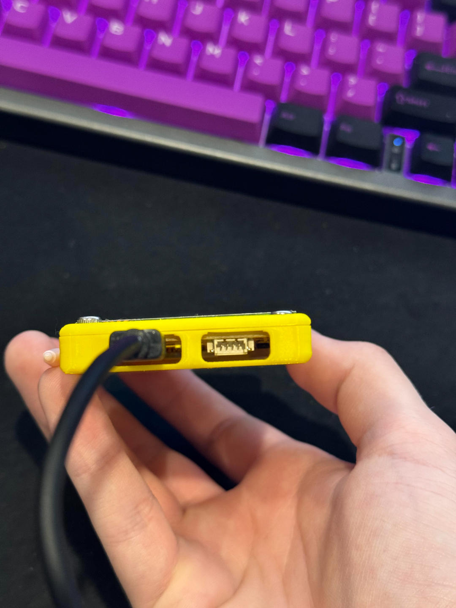
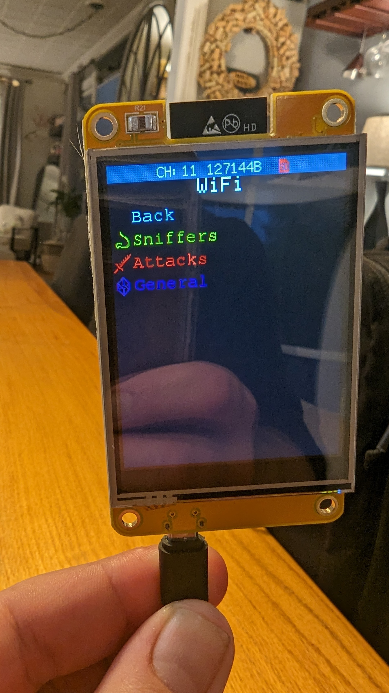
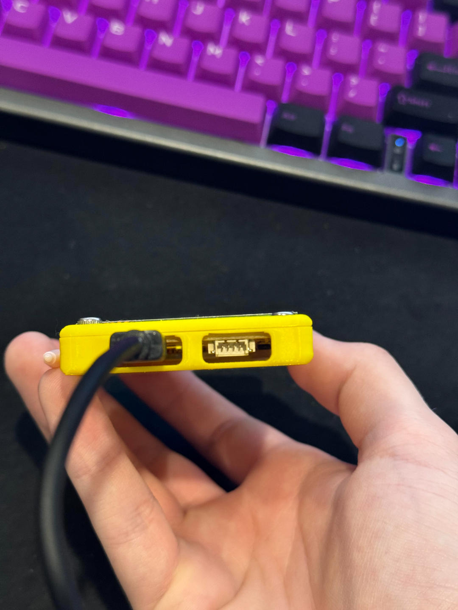
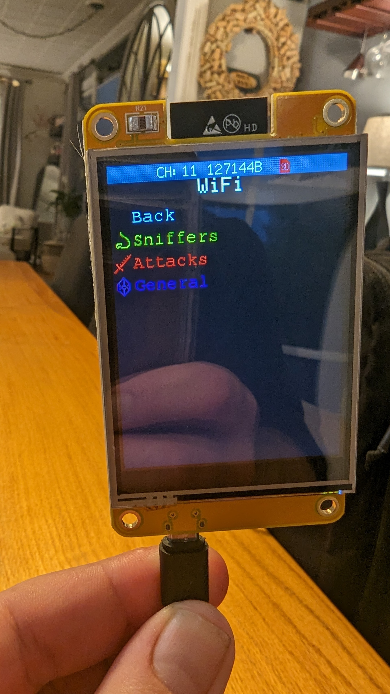

Bienvenido a Namastech
Ciberseguridad, gadgets y hardware al alcance de tu mano.
Bienvenido a Namastech
Ciberseguridad, gadgets y hardware al alcance de tu mano.

 




Envío gratis a todo Chile*
El CYD Yellow WiFi Marauder es una herramienta portátil de penetration testing para redes Wi-Fi y Bluetooth. Desarrollado por el investigador justcallmekoko e inspirado en el proyecto esp8266_deauther de Spacehuhn, este dispositivo reúne en un formato compacto un conjunto de utilidades ofensivas y defensivas para pruebas de seguridad inalámbrica.
El CYD Yellow WiFi Marauder integra un completo set de herramientas para análisis inalámbrico: escaneo avanzado de dispositivos, pruebas de Wi-Fi y Bluetooth, ataques de Man-in-the-Middle, clonación de redes y utilidades defensivas para auditorías de seguridad.
Permite auditar redes Wi-Fi con deautenticación, captura de handshakes WPA/WPA2, ataques contra redes abiertas y filtrado de SSID/MAC. En el ámbito Bluetooth, incluye escaneo, sniffing y análisis de tráfico. Todo en una interfaz portátil y sencilla de usar, ideal para pruebas de campo.
⚠️ El uso de ciertas funciones del CYD Yellow WiFi Marauder sin autorización explícita del propietario del objetivo es ilegal en la mayoría de los países. Úsalo siempre en entornos controlados y con fines educativos o de auditoría con consentimiento.
Let's Socialize